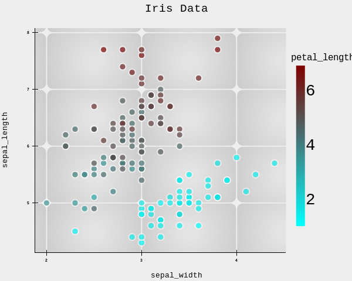
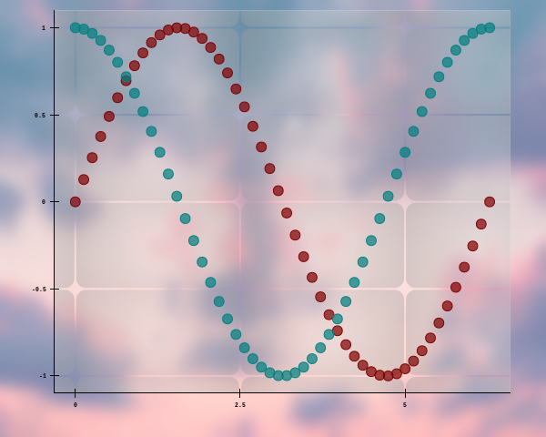

Scatter Plots
The scatter() method is the core plotting function. It adds points to your chart and provides extensive customization options, from basic color and size to advanced mapping and visual effects.
Basic Usage
With Raw Lists
With a DataFrame
When you provide a DataFrame, x and y are column names. The data argument accepts Polars, Pandas, NumPy, Arrow, or any convertible format.Parameters
| Parameter | Type | Description |
|---|---|---|
x |
str or list | Column name or list of numbers |
y |
str or list | Column name or list of numbers |
data |
any convertible type | Data source (optional if x,y are lists) |
color |
str | Color name or hex (default: auto‑cycled) |
size |
float | Base dot size multiplier (default 1) |
alpha |
float | Opacity (0‑1) (default 0.7) |
stroke |
bool | Whether to outline points (default True) |
stroke_size |
float | Outline thickness (default 1) |
glow |
bool | Add glow effect (default False) |
shadow |
bool | Add shadow (default False) |
shadow_radius |
float | Shadow blur radius (default 1) |
title |
str | Label for legend (if you add multiple scatters) |
color_by |
str | Column name to map point colors |
color_range |
tuple | Two colors (hex/names) for min/max mapping |
size_by |
str | Column name to map point sizes |
size_range |
tuple | (min_size, max_size) multipliers (default (1,2)) |
Dot Shapes
ReyPlot offers a variety of marker shapes. The following examples use the Iris dataset with the same style but different dot shapes.
data
The data parameter accepts a DataFrame from Polars or Pandas.
It is used to initialize the dataset for ReyPlot.
Here, data_set is a Polars DataFrame containing the Iris dataset.
x and y
x and y can take:
- a string representing a column name (when
datais provided), or - a list, NumPy array, or Polars Series (when
datais not provided).
Example 1 — Using column names
data_set = rp.load_dataset("iris")
chrt = rp.chart()
chrt.scatter(data=data_set, x="sepal_width", y="petal_width")

Example 2 — Using raw numeric data
x = np.linspace(0, 2*np.pi, 50)
y1 = np.sin(x)
y2 = np.cos(x)
chrt = rp.chart()
chrt.scatter(x=x, y=y1)
chrt.scatter(x=x, y=y2)
chrt.background_image(path="image", blur=7)

color
The color parameter accepts:
- a color name (e.g.,
"red","sky","teal"), or - a hex code (e.g.,
"#00AFDB").
If not provided, ReyPlot automatically assigns a color.
size
Controls the marker size.
Takes a positive float.
Default value: 1.
alpha
Controls the opacity of the scatter points.
Takes a float between 0 and 1.
Default value: 0.7.
stroke
Enables or disables the marker edge (outline).
Takes a bool.
Default value: True.
stroke_size
Controls the thickness of the marker edge.
Takes a positive float.
Default value: 1.
glow
Enables a glow effect around the scatter points.
Takes a bool.
Default value: False.
shadow
Enables a shadow effect under the scatter points.
Takes a bool.
Default value: False.
shadow_radius
Controls the radius of the shadow blur.
Takes a positive float.
Default value: 1.